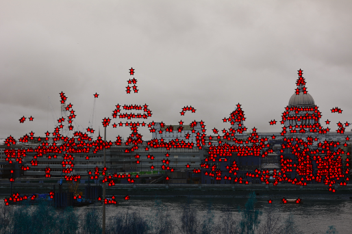

Project Seven B: Automatic Panoramas
CS 194-26: Computational Photography | Krishna Parashar
Background: Homographies
In this project we want to change the perspective of images for a the novel application of taking a series of adjacent images and converting them into a seamless panorama. To do this we take advantage of a linear algebra techniques to calculate a homography which is a fancy way of saying the matrix we need to transform the coordinates way have to to find where they should go. We start by taking some photographs, and then we manually define correspondence points between the two images (we need at least 4 to make this work, more if we want a nicer transformation). We then compute the following to get our homography matrix. We use least squares to compute the value for a, b, c, d, e, f, g, and h, where i is 1 - our scale factor.

Implementation: Image Rectification
After computing the Homography matrix, I tested it out by rectifying (making rectangular) some images that I took that were at an angle. This is done by manually setting the correspondence points to something that is rather rectangular and then morphing the image towards that.
Here is how the rectified images look:
Holstee Manifesto

Original |

Rectified |
Graph Theory

Original |

Rectified |
Implementation: Image Mosaicing
Now that we know the homography and warping works, we are ready to warp the images and blend them together to make a panorama. We blend these images together using a simple weighted average.
The View from Half Moon Bay

First Image |

Second Image |

Sunset Panorama
The View from the Thames

First Image |

Second Image |

London Panorama
The View from the Campanile

First Image |

Second Image |

Campanile Panorama
What I Learned
I used to simply take for granted the panorama stitching feature in Lightroom and on my phone. Now I still will, but now it is immensely cooler to know how those images are combined together.
Part 7B: Automatic Panoramas
Manually selecting points proved to be an immensely time consuming and error prone process, so in this part we attempt to automate the process. We do this by first apply Harris Corner Detection to the Images, choosing the most useful ones by applying Adaptive Non-Maximal Supression. Once we have those values we extract the feature descriptors for each of the images, normalize them, and then find the corresponding matches. Finally we use the RANSAC algorithms to estimate the ideal homography before we warp our images into a stunning panorama.
Harris Corner Detections
We use this to find key points in the image that could be a correspondence. The idea behind this algorithm is that edges and falt surfaces can easily be shifted and look the same and offer clusters of correspondence points. We end up with way too many values (left image) and so we use Adaptive Non-Maximal Supression to keep the key points for the image (right image).
|

Harris Detection |

ANMS |
RANSAC
After we extract and match our features we soon realize that some of these correspondences may not actually be correct even if they look similar. Thus I choose the RANSAC algorithms to iterate about 5000 times, choosing 4 pairs at random and computing the projective homography. I then count how many pairs also agree with this homography and keep the subset of pairs for which this count is maximized. I then warp the image as before using inverse warping for all the points.
Results
The difference is pretty drastic and even though I choose around 8 to 10 points, human error caused the manually adjusted images to be somewhat misaligned. The automatic panorama looks spectacular in comparison.
The View from Half Moon Bay
Manual Panorama

Automatic Panorama
The View from the Thames
Manual Panorama

Automatic Panorama
The View from the Campanile
Manual Panorama

Automatic Panorama